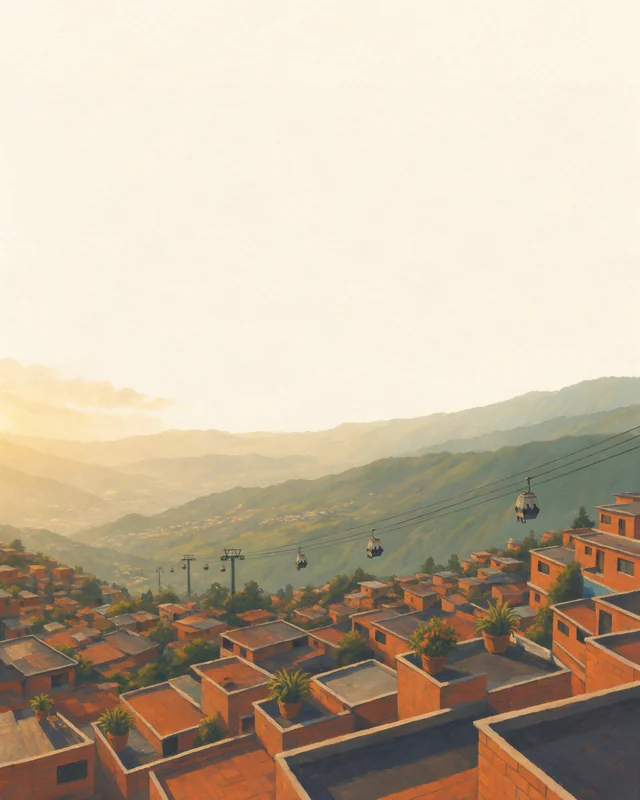
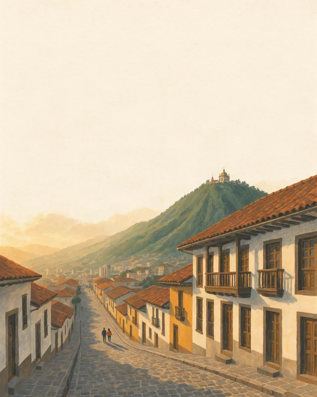

Demostración del módulo del mapaMap module demo
Baja para recorrer la rutaScroll down to travel the route
Réplica de la sección «Cómo va a funcionar». El mapa es real: teselas de OpenStreetMap, el trazado por carretera calculado con OSRM y el relieve de los Andes y la Sierra Nevada.A copy of the “How it will work” section. The map is real: OpenStreetMap tiles, the road route computed with OSRM, and the relief of the Andes and the Sierra Nevada.
Cómo va a funcionarHow it will work
Cuatro cosas, una appFour things, one app

Mapa:Map: © OpenStreetMap, OpenFreeMap, OpenMapTiles. Relieve:Relief: Mapzen.
-

Medellín
Planea.Plan.
Arma tu viaje día por día sobre el mapa, con horarios y presupuesto claros.Plan your trip day by day on the map, with clear times and budget.
-

Bogotá
Coincide.Match up.
Encuentra viajeros que van a donde vas, cuando vas.Meet travelers heading where you're going, when you're going.
-
Cartagena
Viajen juntos.Travel together.
Un solo lugar para el plan, el chat, las votaciones y las cuentas.One place for the plan, the chat, the votes and the bills.
-
Santa Marta y TayronaSanta Marta and Tayrona
Confianza.Trust.
Perfiles verificados, reseñas reales y un botón de seguridad que siempre es gratis.Verified profiles, real reviews and a safety button that's always free.